Horses
Sculpture
Concept
This wooden sculpture captures the dynamic energy and graceful movement of horses,
embodying the spirit of freedom and strength that these magnificent animals represent.
The composition brings together multiple horses in a harmonious arrangement, reflecting
the bond between these creatures and their significance in Kazakh culture. The work
explores themes of motion, unity, and the timeless connection between humans and horses
through the natural beauty of wood grain and organic forms.
Processes &
Tools
Hand-carved from a single block of wood using traditional sculpting techniques. The
artist carefully worked with the natural grain and structure of the wood, allowing the
material to guide the form and movement of the horses. Each figure was meticulously
shaped to capture the essence of equine grace and power. The piece required careful
attention to balance and composition to create a cohesive group while maintaining
individual character for each horse. Traditional chisels, rasps, and sanding tools were
used to achieve the smooth, flowing lines that suggest motion and vitality.
Technical Details
Material: Wood
Technique: Hand-carved sculpture
Tools: Chisels, rasps, sandpaper
Finish: Natural wood finish
Year: 2024
Technique: Hand-carved sculpture
Tools: Chisels, rasps, sandpaper
Finish: Natural wood finish
Year: 2024
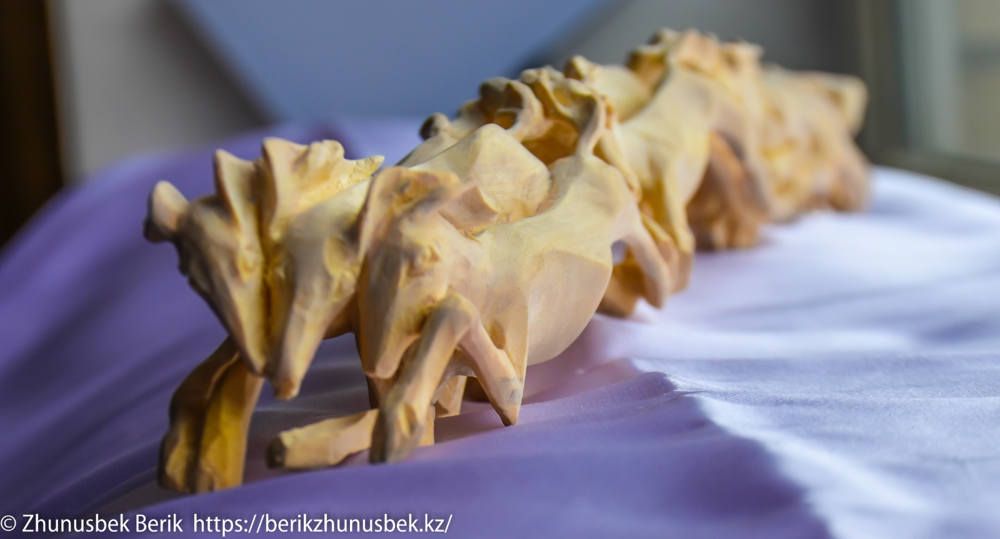
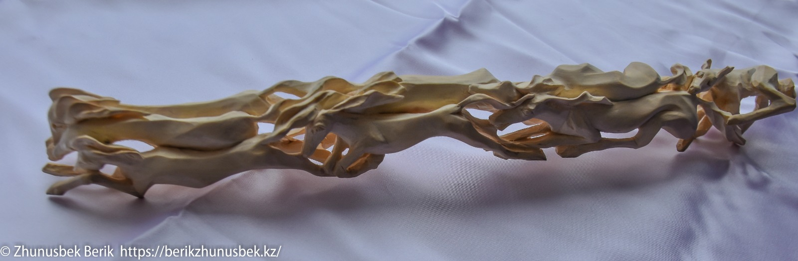
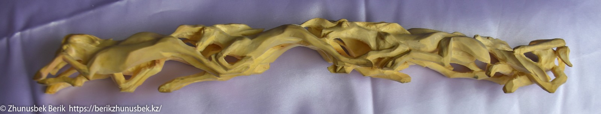
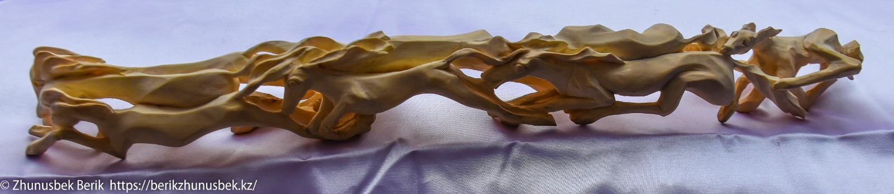
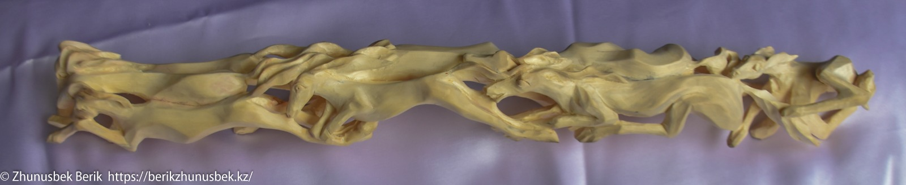
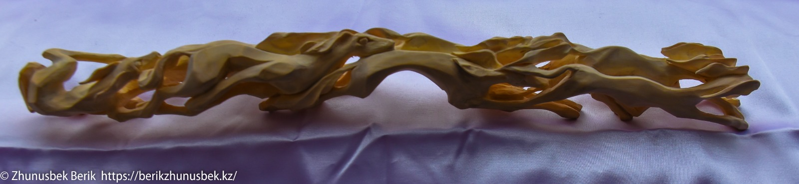
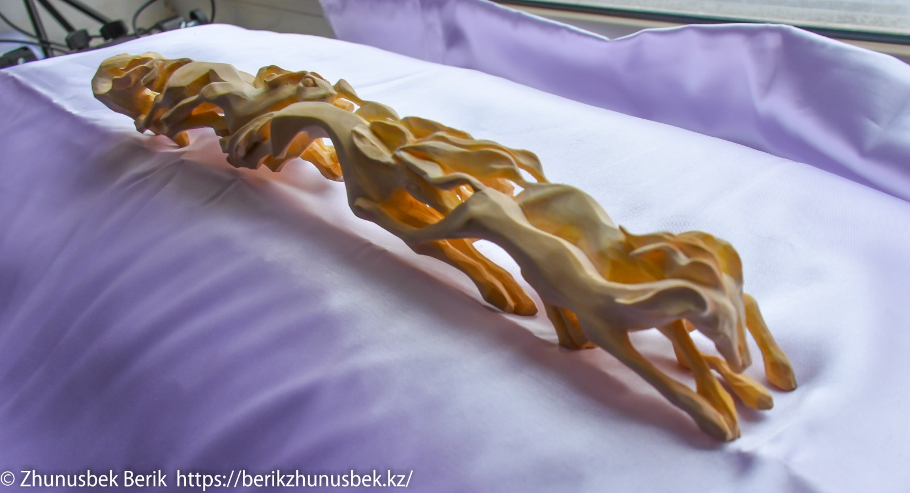
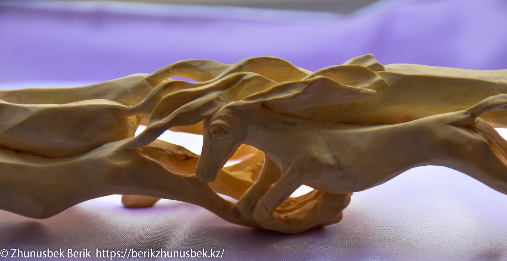
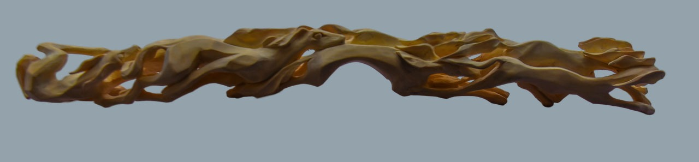
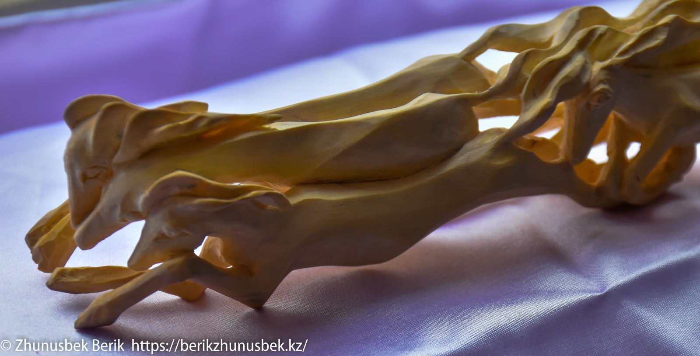
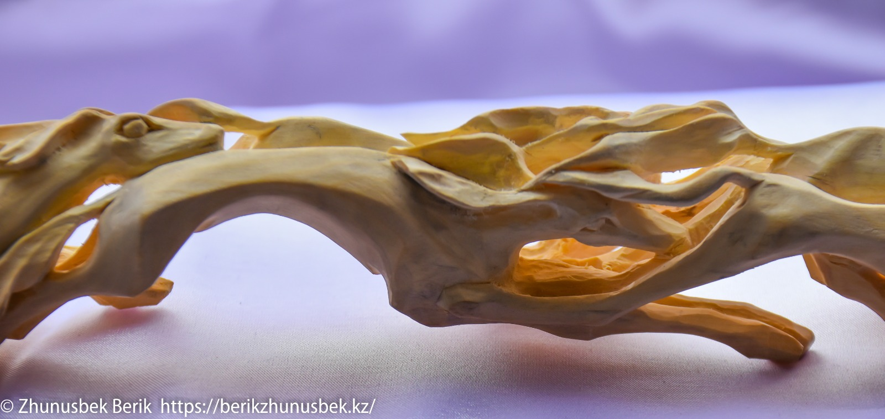